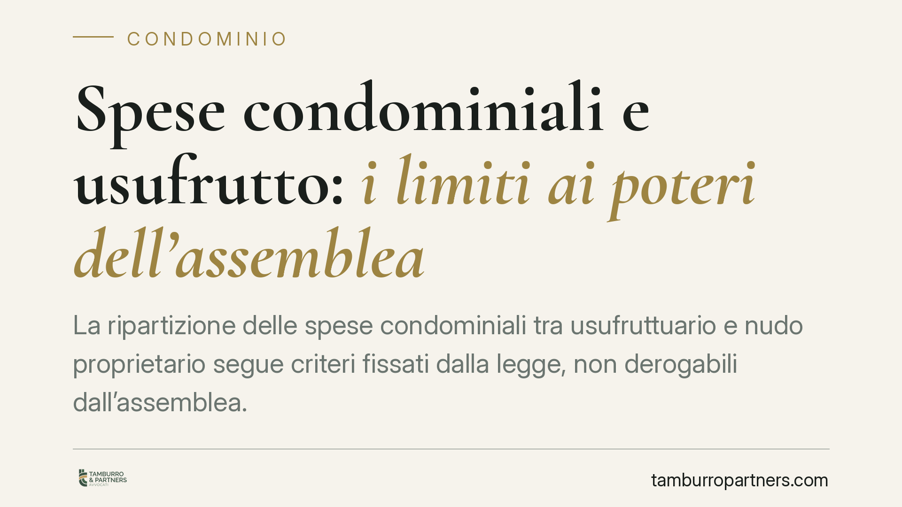

Spese condominiali e usufrutto: i limiti ai poteri dell'assemblea
La ripartizione delle spese condominiali tra usufruttuario e nudo proprietario segue criteri fissati dalla legge, non derogabili dall'assemblea. Un tema ricorrente nei contenziosi, soprattutto quando un immobile è gravato da usufrutto e intestato a una società. Vediamo cosa prevede la normativa, quali sono i limiti dei poteri assembleari e come muoversi in concreto.

Il caso tipo
Un appartamento in condominio è gravato da usufrutto: la nuda proprietà appartiene a una società (ad esempio una Srl), mentre il godimento spetta all'usufruttuario. Alla scadenza dei contributi condominiali sorge la domanda ricorrente: chi deve pagare, e in quale misura? E può l'assemblea decidere diversamente rispetto ai criteri di legge?
La risposta richiede di distinguere due piani: la ripartizione interna tra usufruttuario e nudo proprietario e la posizione di entrambi verso il condominio.
Inquadramento normativo
Il riparto interno delle spese tra usufruttuario e nudo proprietario non è disciplinato, in via diretta, dalle norme sul condominio, ma dagli articoli 1004 e 1005 del Codice civile, dettati in materia di usufrutto.
In sintesi:
- l'art. 1004 c.c. pone a carico dell'usufruttuario le spese di ordinaria amministrazione e di conservazione connesse al godimento del bene;
- l'art. 1005 c.c. addossa al nudo proprietario le spese di straordinaria amministrazione, salvo il diritto dell'usufruttuario agli interessi sulle somme eventualmente anticipate.
Traslato al condominio: le spese per la gestione e la fruizione dei servizi (pulizia, illuminazione, piccola manutenzione) gravano in linea di massima sull'usufruttuario; gli interventi straordinari (rifacimento del tetto, consolidamenti strutturali) competono al nudo proprietario.
Sul versante dei rapporti con il condominio interviene l'art. 67, comma 8, disp. att. c.c., nella formulazione introdotta dalla L. 220/2012 (riforma del condominio, entrata in vigore il 18 giugno 2013, dopo i sei mesi di vacatio seguiti alla pubblicazione in Gazzetta Ufficiale). La norma prevede che usufruttuario e nudo proprietario rispondano solidalmente verso il condominio per il pagamento dei contributi. Resta ferma, tra loro, la ripartizione interna secondo gli artt. 1004-1005 c.c.
> Nota di verifica. La sintesi di partenza richiama un'ordinanza della Corte di Cassazione (indicata come n. 19011/2026). Al momento della redazione tale estremo non risulta verificabile: l'anno indicato è futuro. Prima di fondare qualsiasi decisione su quel precedente è indispensabile riscontrarne numero, anno e contenuto nelle banche dati ufficiali. In questa sede ci limitiamo ai principi normativi certi.
Il limite ai poteri dell'assemblea
Il principio di fondo è stabile: l'assemblea non può riscrivere i criteri legali di imputazione soggettiva delle spese. Può deliberare l'esecuzione di un intervento e ripartirne il costo tra le unità immobiliari secondo i millesimi, ma non può decidere a quale soggetto (usufruttuario o nudo proprietario) imputare internamente quel costo in deroga agli artt. 1004-1005 c.c.
In altri termini: l'assemblea governa il rapporto tra condomini, non il rapporto interno tra chi gode del bene e chi ne ha la nuda proprietà. Una delibera che pretendesse di spostare su un soggetto una spesa che la legge attribuisce all'altro eccede i poteri assembleari ed è censurabile.
La questione temporale e la solidarietà
La solidarietà passiva tra usufruttuario e nudo proprietario verso il condominio è un effetto della disciplina introdotta dalla L. 220/2012. Per i debiti anteriori all'entrata in vigore della riforma (18 giugno 2013) occorre valutare quale regime applicare, alla luce del principio generale di irretroattività della legge (art. 11 delle preleggi): le norme si applicano, di regola, solo ai rapporti sorti dopo la loro vigenza.
Si tratta di una verifica da condurre caso per caso, sulla base della data di maturazione del credito e della disciplina applicabile ratione temporis.
Implicazioni pratiche
Per l'amministratore e per i proprietari il punto operativo è duplice: individuare correttamente chi risponde e per quali spese, e redigere delibere e solleciti coerenti con i criteri legali. Un'imputazione errata espone a contestazioni e può rendere inefficace l'azione di recupero.
Cosa fare in concreto
- Verificare la titolarità: accertare chi è usufruttuario e chi nudo proprietario, acquisendo il titolo (atto di costituzione dell'usufrutto, successione, visura).
- Qualificare la spesa: distinguere ordinaria (usufruttuario, art. 1004 c.c.) da straordinaria (nudo proprietario, art. 1005 c.c.) prima di emettere l'avviso di pagamento.
- Datare il credito: individuare la data di maturazione, perché incide sul regime di solidarietà applicabile rispetto all'entrata in vigore della L. 220/2012 (18 giugno 2013).
- Rivedere le delibere: controllare che l'assemblea non abbia deliberato imputazioni soggettive in deroga ai criteri di legge.
- Conservare la documentazione: archiviare titoli, verbali e corrispondenza, utili in sede di eventuale contenzioso.
È opportuno intervenire con tempestività ogni volta che emerga un'imputazione dubbia, per evitare che le contestazioni si consolidino nel tempo.
---
*Contributo informativo a cura di Tamburro & Partners - Avv. Giuseppe Tamburro. Non costituisce parere legale.*
Ogni condominio ha una storia a sé.
Se gestisci un'amministrazione e vuoi un confronto su una specifica questione condominiale, scrivi allo studio. Ti rispondiamo entro un giorno lavorativo.